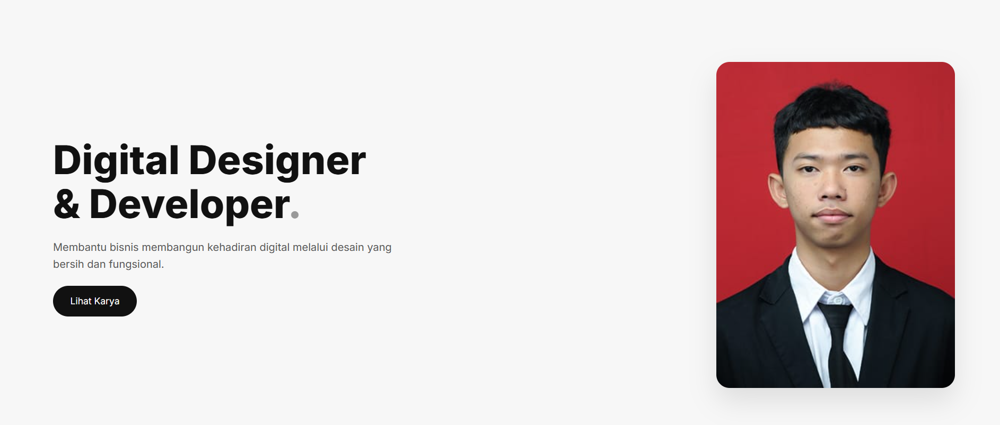
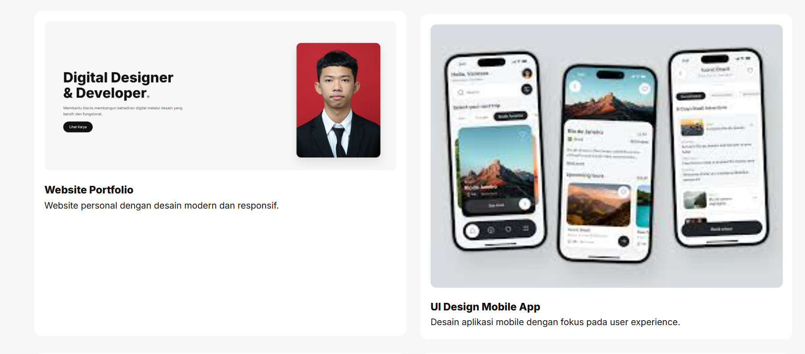
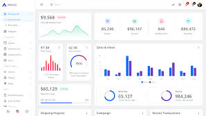

Digital Designer
& Developer.
Membantu bisnis membangun kehadiran digital melalui desain yang bersih dan fungsional.
Lihat Karya
Membantu bisnis membangun kehadiran digital melalui desain yang bersih dan fungsional.
Lihat Karya
Saya adalah seorang Digital Designer dan Developer yang memiliki minat besar dalam menciptakan pengalaman digital yang bersih, modern, dan mudah digunakan. Saya percaya bahwa desain yang baik bukan hanya tentang tampilan, tetapi juga tentang bagaimana sebuah produk dapat memberikan solusi nyata bagi penggunanya.
Saya terbiasa mengerjakan berbagai proyek mulai dari desain UI/UX, pembuatan website, hingga pengembangan aplikasi sederhana. Dalam setiap pekerjaan, saya selalu mengutamakan detail, konsistensi, dan efisiensi agar hasil yang diberikan tidak hanya menarik secara visual tetapi juga optimal secara fungsional.
Selain itu, saya juga senang mempelajari hal-hal baru di dunia teknologi dan desain. Saya terus mengembangkan kemampuan saya agar dapat mengikuti perkembangan tren digital yang terus berubah, serta memberikan hasil terbaik dalam setiap proyek yang saya kerjakan.
Tujuan saya adalah membantu individu maupun bisnis untuk membangun identitas digital yang kuat, profesional, dan relevan di era modern ini.
Aherdi
UI/UX & Web Dev
Indonesia
creativear@gmail.com

Website personal dengan desain modern dan responsif.

Desain aplikasi mobile dengan fokus pada user experience.

Landing page untuk meningkatkan konversi bisnis online.

Interface dashboard dengan tampilan clean dan informatif.